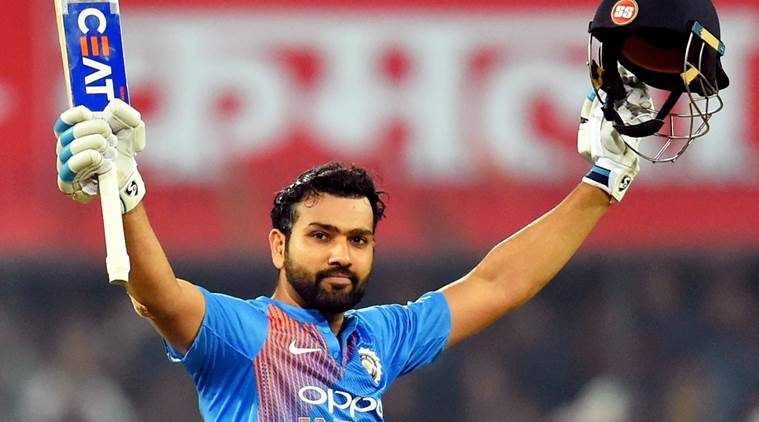

Rohit Sharma scoring Double Hundred against Srilanka
Here's a timeline of Rohit Sharma Cricket Career
1987 - born in Bansod , Nagpur , Maharashtra
2005 - Made List A debut for Westzone against Centralzone in Deodhar Trophy at Gwalior.Batting at number 8 he scored 31 notout.
2006 - Made his first-class debut for India A against Newzealand A at Darwin where he scored 57 and 22 as India A won by 3 wickets.
He made his Ranji Trophy debut for Mumbai in the 2006–07 season and scored 205 off 267 balls against Gujarat
2007 - Made his ODI and T20I aginst Ireland and England respectively.
2013 - Made his International Test debut against Westindies at Kolkata where he scored a hundred on debut with 177 runs.He followed it up with 111 on his homeground wankhade.
2013 - Appointed as Mumbai Indians captain in middle of the season and he won the IPL for his team.
2019 - He scored 5 hundreds in ODI Worldcup , most by a batter in any Worldcup
2022 - He was appointed as Indian cricket Team Captain
National Honours
2015 - Arjuna Award
2020 - Major Dhyanchand Khel Ratna Award
Sporting Honours
ICC Men's ODI cricketer of the Year : 2019
ICC Men's ODI Team of the Year : 2016 , 2017 , 2018 , 2019